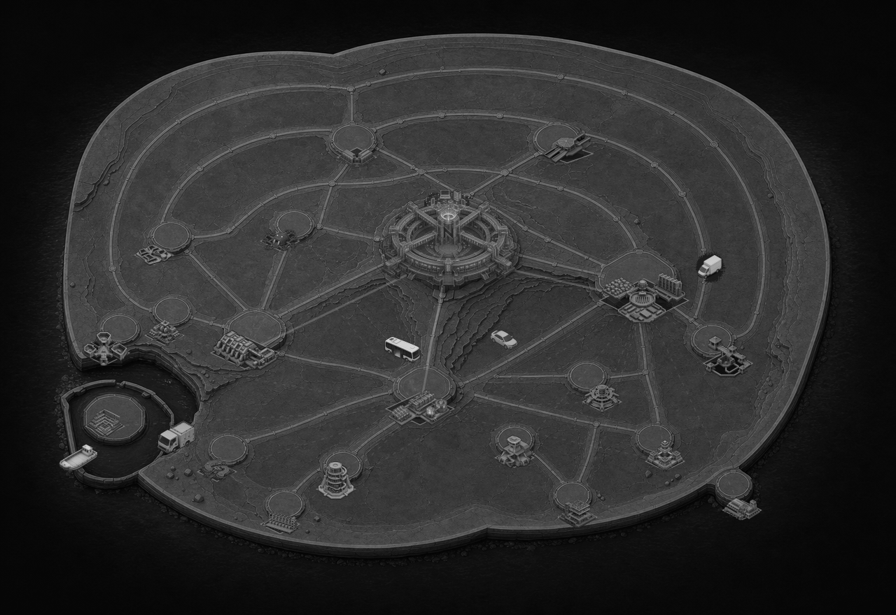
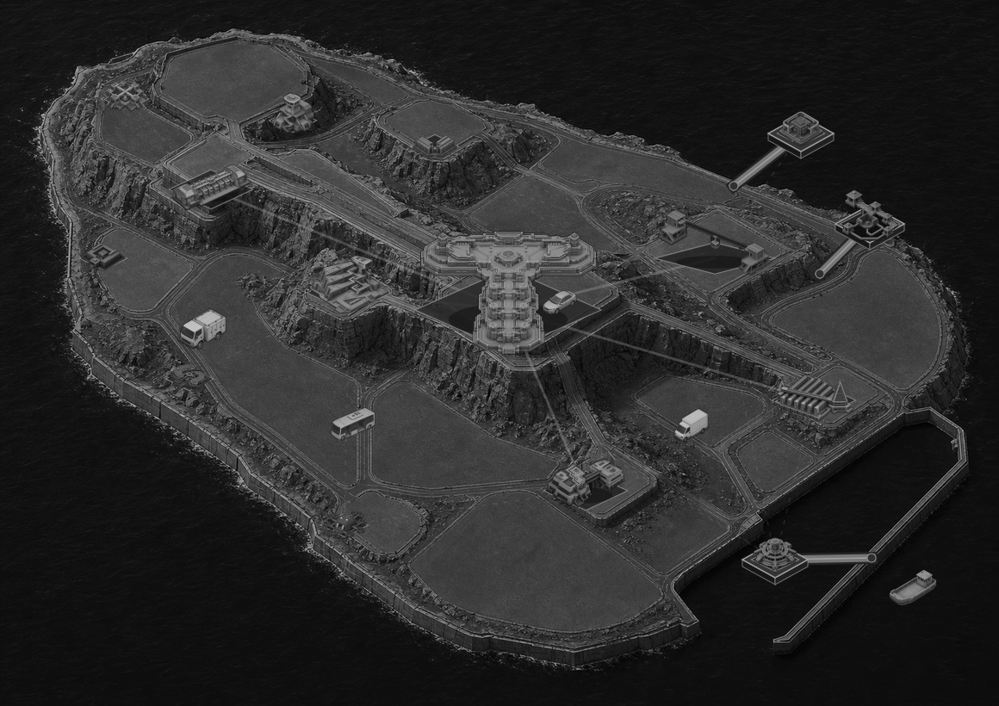
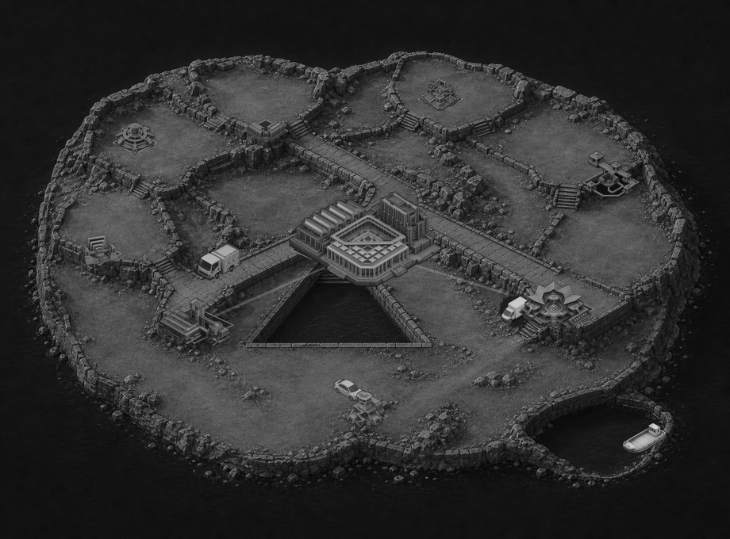
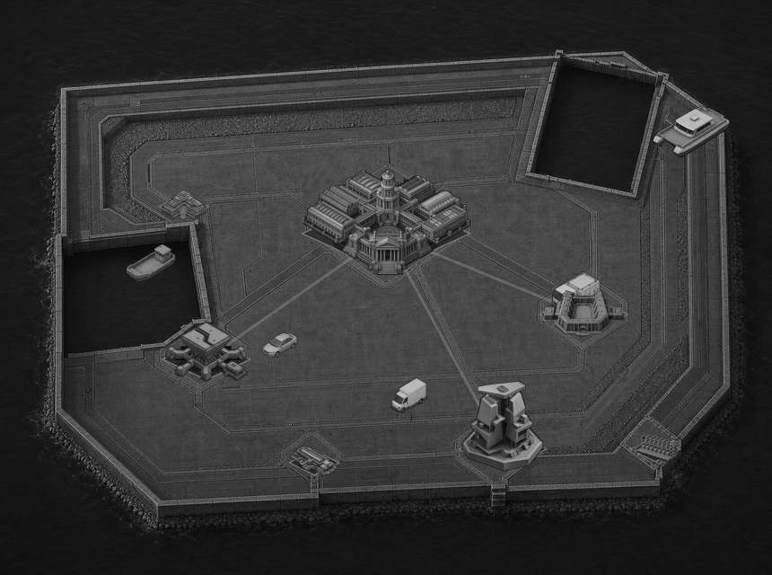
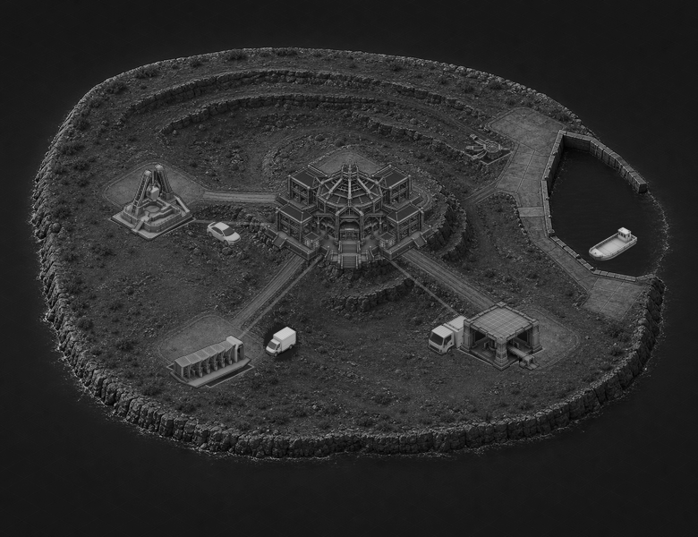

NinjaOne
20 locked landmarks · 5 mixed ambient assets

Generated terrain plates with reviewed landmark art and deterministic mixed transport. These scenes are intentionally not stitched into a global map.
20 locked landmarks · 5 mixed ambient assets

15 locked landmarks · 5 mixed ambient assets

9 locked landmarks · 4 mixed ambient assets

7 locked landmarks · 5 mixed ambient assets

5 locked landmarks · 4 mixed ambient assets
